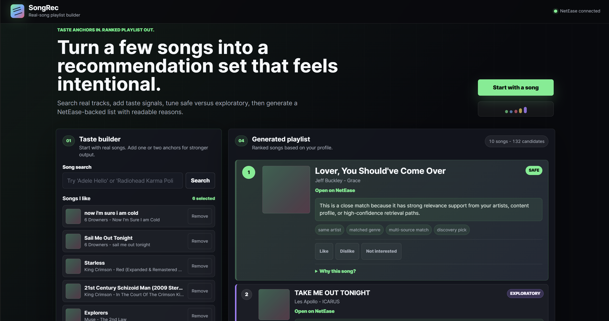
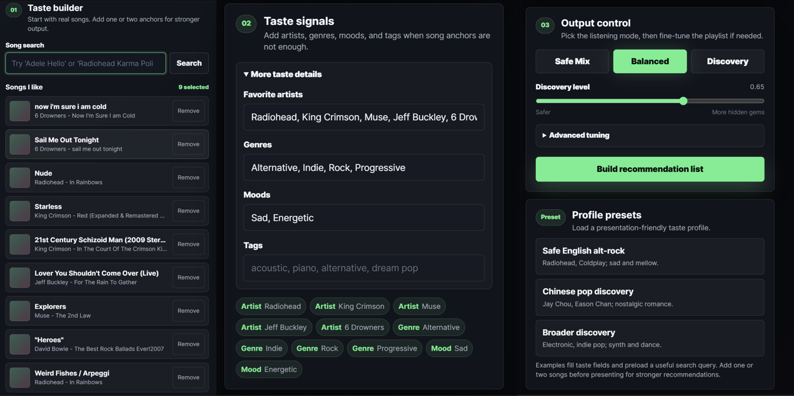
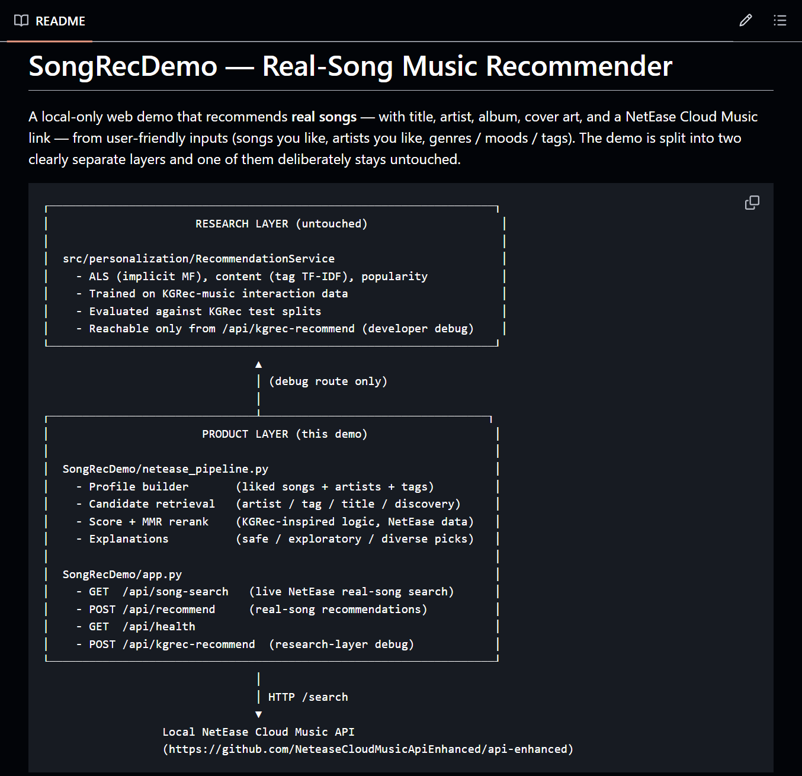
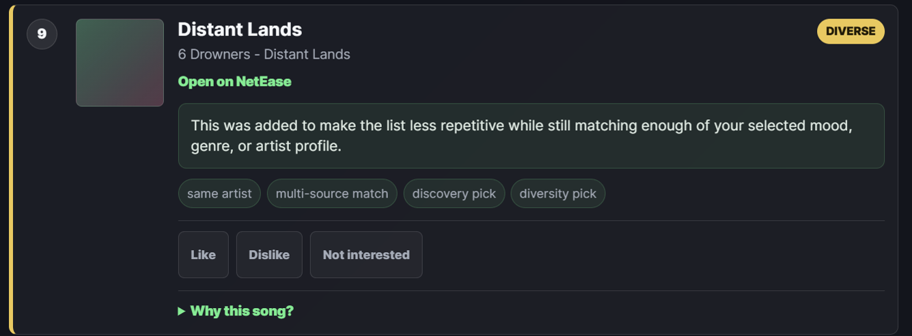

At first, my idea for this project was actually very simple: to build a music recommendation website. To be honest, from a product manager's perspective, this idea did not have much inherent value. When I first thought of it, I had not even seriously considered what user pain point it could improve, what problem it could solve, or any of the core product questions that usually matter. So this product did not really begin with a grand original intention. I just thought that as long as I started building something, I would learn something from it, because AI was the best teacher I had. In the end, that apprentice-like mindset proved to be right.
"Users enter the songs, artists, styles, and moods they like, and the system returns some new song recommendations."

This idea does not sound complicated. After all, we use products like Spotify and NetEase Cloud Music every day, and recommendations already feel like a natural part of the experience. But once I actually started building it, I realized that a recommendation system is not as simple as "write a model and let it output answers." It is more like a complete product pipeline: first understand the user, then find candidate songs, then judge which ones are more relevant, then control diversity and novelty, then explain why each song is being recommended, and finally record whether the user actually likes it.
This project did not start directly with writing a website. I first ran research-layer experiments using the KGRec dataset and built several basic recommendation models, including a popularity baseline, ALS collaborative filtering, and a tag-based content recommender. The purpose of this stage was to understand the basic problems of recommendation systems first: what personalization means, what cold start means, why recommending only popular songs is safe but boring, why collaborative filtering can discover hidden similarities between users, and why content-based recommendation is easier to explain but can also be limited by tags. In a way, it was also an extension of the machine learning project I did during the summer after sophomore year, where I tried to predict song popularity.

In the research layer, the ALS model was the first thing that helped me truly understand the meaning of "collaborative filtering." It is not about finding similar artists. Instead, it learns hidden preferences from a large number of interactions between users and songs. This later became something I paid close attention to when building the product layer: if there is no real user-item interaction matrix, I cannot casually claim that I am using true collaborative filtering.
After finishing the research work, I began turning the idea into a real website. But the first problem I encountered at the product layer was that real-world data is not clean. The song IDs in KGRec and the real song IDs from NetEase Cloud Music do not align, so I could not directly move the ALS model trained in the research layer into the website. At that point, I had to make a product-manager-style tradeoff: should I force the model into the product just to make it sound more advanced, or should I honestly face the data limitations and design a recommendation flow that actually works?
I chose the latter.
When the website really began to take shape, I went through a shift in how I understood the project.
At the beginning, I kept focusing on "designing the algorithm." I was thinking about what model to use, what ranking strategy to apply, and what features to include. I thought the core competitiveness of a recommendation system came from the algorithm itself. But as the project kept moving forward, I found that the problems I ran into became less and less like algorithm problems.
A lot of the time, the truly difficult part was not how to calculate a score, but how to define what that score actually meant. Why did the system recommend this song? If a user asked me, "Why this one instead of another one?" could I explain it clearly? If I could not even explain it myself, then no matter how complex the logic was, it would not matter.
At one point, I renamed a metric in the system from collaborative proxy to multi-source agreement. On the surface, this was just a variable rename, but it made me realize something more important: a product can have limitations, but it cannot pretend to have capabilities it does not actually possess. Because I did not have real large-scale user behavior data, it was not collaborative filtering in the true sense. Continuing to use that name may have sounded more impressive, but it would have made me ignore the system's real boundaries. From then on, I started caring more and more about one thing: what is this system or metric actually doing, rather than what does it look like it is doing?
This change also affected how I developed the system later. In the past, I kept adding more constraints into the system. I wanted it to look at song comment counts, artist follower counts, even song duration, hoping these would make it smarter. Later, I started spending more time thinking about whether the system was clear enough. Could the recommendation results be explained? If something went wrong, could I locate the issue? I gradually realized that a system capable of evolving over time is often more valuable than a system that looks complicated in the short term.
Another thing that left a deep impression on me was that recommendation systems are fundamentally about dealing with uncertainty. When I say I like a certain artist, it does not mean I only like that artist. When I click on a song, it does not necessarily mean I truly like it. When I do not click, it does not necessarily mean I hate it. A lot of the time, we can only make guesses based on limited information, then keep correcting those guesses through feedback. This helped me understand that a recommendation system is not about finding the "correct answer." It is about continuously approaching a more reasonable answer.
As the project became more complete, I also slowly realized that perhaps the most important part of a recommendation system is not the recommendation itself, but the feedback. Without feedback, the system remains forever inside the developer's imagination, so for now this project is still basically just my imagination. With feedback, it finally begins to come into contact with users. I used to think the endpoint of recommendation was showing the results. Later, I realized that this is actually only the starting point. What really matters is what the user does next, and whether the system can learn from those actions.
Looking back at this project, my biggest gain was probably that I began learning how to understand recommendation systems from a product perspective. Building a recommendation system is not just building an algorithm. It means designing a complete product system: it needs recommendation results, but also explanations; it needs user experience, but also data feedback. The questions that truly need to be answered are always: what problem does this system solve? Where are its capability boundaries? And can it keep improving over time? In the real world, the hard part of a recommendation system is not only predicting what users like, but constantly making tradeoffs between incomplete data, unstable external APIs, limited computing resources, and real product experience.
These questions do not have standard answers, but they are more worth thinking about than the specific algorithm being used.
Of course, I would not really call this system Spotify, because all I built was a recommendation algorithm, and it is still far from what Spotify actually does. Since there is no real large-scale user behavior matrix, it is nowhere near capable of doing true platform-level collaborative filtering like Spotify or NetEase Cloud Music. But since it is a recommendation system connected to NetEase Cloud's API, it can still return real songs from the NetEase Cloud library. Especially when the system recommended songs that my own band had released on NetEase Cloud, I still felt a pretty strong sense of achievement. ;)

Finally, a few thoughts on AI and vibe coding. I can clearly feel that AI has made development much faster, and it allowed me to break a system that would have been very difficult to complete alone into multiple stages. Today, a single sentence can make an agent generate an actual project for you. But I also realized that if I only let AI keep writing code while I do not understand the system myself, the project can easily become a pile of advanced-looking features glued together. In other words, a code mess. What is truly valuable may not be "letting AI write code for me," but whether I can ask questions like a product manager, define boundaries, judge priorities, break the work into stages, and know when to add features and when to stop and consolidate. How to use AI well is a very deep topic.
But I still want to keep thinking about this part, because I do not have enough experience yet. Maybe what this project really taught me is this: AI can accelerate execution, but it cannot replace judgment. The most dangerous part of vibe coding is that it can make people mistake speed for ability. But its most valuable part is also that it allows one person to verify ideas and iterate much faster. The key is not whether the code was written by AI. The key is whether I truly understand what I am building.